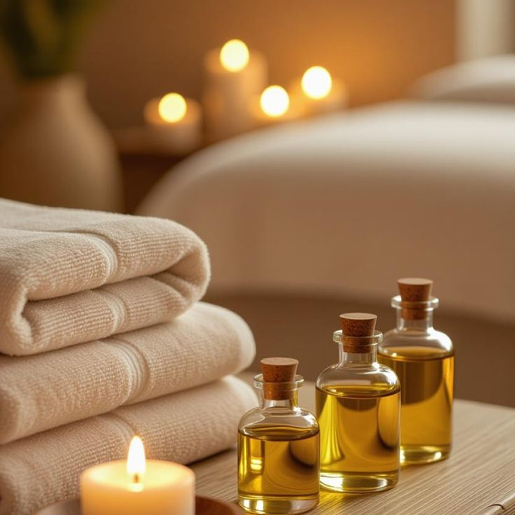
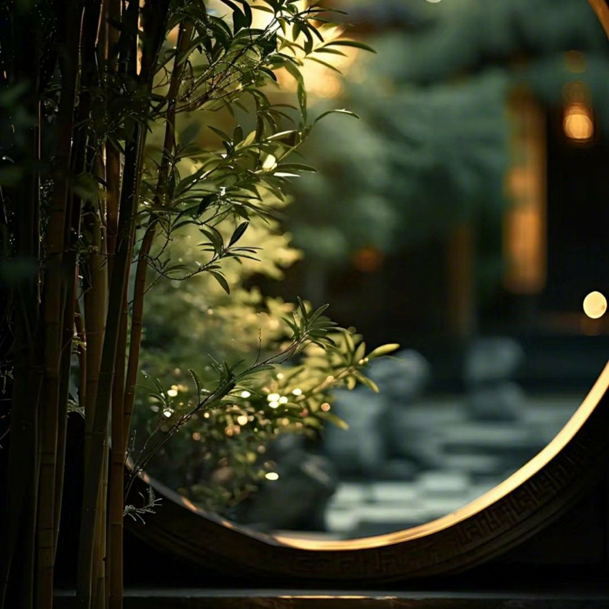
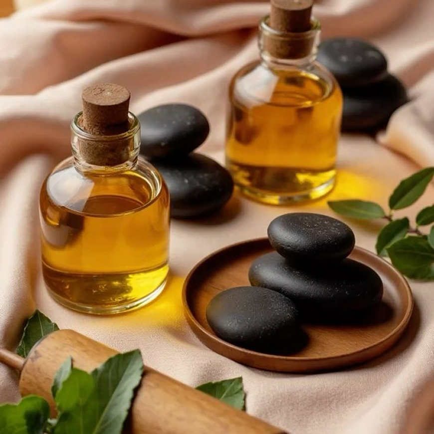

Магия масел и их роль
Почему мы так внимательны к выбору масел?
Многие думают, что масло в массаже нужно только для того, чтобы руки мастера лучше скользили. На самом деле — это полноценный компонент ухода, который работает на клеточном уровне.
Как это работает
Кожа — это самый большой орган нашего тела. Качественное масло служит «проводником» (трансдермальным агентом), который помогает активным веществам проникать глубже в дерму.
На что мы обращаем внимание при выборе
Базовые масла. Мы используем масла холодного отжима (миндальное, жожоба, виноградной косточки). В них сохранены витамины E, A и антиоксиданты.
Отсутствие парафина. Мы не используем дешевые синтетические основы, которые забивают поры и создают эффект «парника».
Скорость впитывания. Наши масла подобраны так, чтобы не оставлять липкой пленки, позволяя коже дышать.

Ароматерапия в массаже
Массаж — это не только про тело, но и про состояние души. Мы дополняем наши процедуры селективными эфирными маслами. Ароматерапия помогает настроиться на нужную волну еще до начала прикосновений.
Запахи напрямую связаны с лимбической системой мозга, которая отвечает за эмоции и память. Правильно подобранный аромат может мгновенно переключить ваш мозг из режима «стресс/работа» в режим «отдых/восстановление».
Наши фавориты
Лаванда — для глубокого расслабления и сна.
Эвкалипт — для бодрости и снятия заложенности.
Иланг-иланг — для снятия стресса и эмоционального подъема.

Гигиена и безопасность в салоне
Ваша безопасность — наш главный приоритет. Мы понимаем, что доверить свое тело другому человеку — это большой шаг. Поэтому в нашем салоне соблюдаются строгие протоколы:
Одноразовые материалы. Простыни, шапочки, салфетки и даже тапочки — всё это строго одноразовое. После каждого клиента зона массажа полностью обновляется.
Обработка рук и поверхностей. Мастера проходят гигиеническую обработку перед началом работы. Все рабочие поверхности дезинфицируются профессиональными средствами после каждого визита.
Контроль косметики. Мы используем только сертифицированные профессиональные бренды. Каждая упаковка проходит строгий контроль срока годности и условий хранения.
Чистота воздуха. В кабинетах поддерживается оптимальный уровень влажности и чистоты воздуха, что важно для глубокого дыхания во время релаксации.
Ваше спокойствие — это фундамент, на котором строится ваш отдых.
Что такое триггерные точки?
Знакомо чувство, когда в мышце словно «застрял камень»? Это триггерная точка.
Триггер — это участок мышцы в состоянии постоянного спазма. Он может вызывать боль, которая «отдает» в другую часть тела (например, от шеи в руку).
Наши мастера используют техники глубокого точечного воздействия. Мы находим этот узел
и мягко, но уверенно воздействуем на него, чтобы восстановить нормальное кровоснабжение
и расслабить мышцу. Боль проходит, возвращается подвижность!

Подготовка к массажу
Чтобы вы получили 100% пользы от процедуры и не чувствовали дискомфорта, мы подготовили несколько важных рекомендаций.
За час до сеанса
Не переедайте. Слишком полный желудок будет мешать вам лежать на животе и может вызвать дискомфорт при глубоком массаже. Идеально — легкий перекус.
Психологический настрой. Постарайтесь завершить важные звонки и рабочие чаты. Массаж — это ваше время «оффлайн».
Во время и после сеанса
Водный баланс. Это критически важно! Массаж активизирует лимфоток и выводит токсины. Чтобы помочь организму, выпейте стакан чистой воды сразу после процедуры.
Прислушайтесь к телу. После массажа может возникнуть легкая сонливость или приятная мышечная слабость — это нормальная реакция нервной системы. Дайте себе 15–20 минут, чтобы плавно вернуться в рабочий ритм.
Важно: Если у вас есть острые воспаления, высокая температура или кожные заболевания, обязательно сообщите об этом мастеру перед началом.